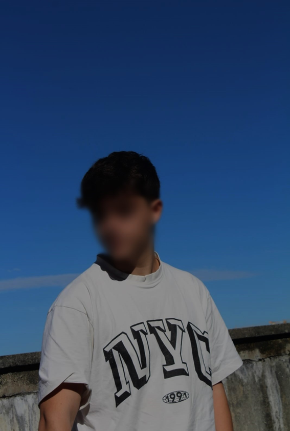

SOBRE MIM
- Um pouco sobre mim
 Olá! Chamo-me Afonso Marques e sou estudante de Gestão e Programação de Sistemas Informáticos, com uma grande paixão pela tecnologia e sempre à procura de novos desafios. O desenvolvimento web, particularmente a área de Front-End, despertou o meu interesse desde cedo, permitindo-me juntar criatividade e técnica para construir experiências digitais apelativas e intuitivas.
Nos meus tempos livres, gosto de explorar o universo dos videojogos e praticas desportos que me ajudam a manter o foco e a disciplina, como musculação, futebol, basquetebol e voleibol. Estas atividades permitem-me desenvolver não só o físico, mas também o espírito de equipa e a resiliência, qualidades que considero essenciais tanto no desporto como na informática.
Estou constantemente à procura de novos conhecimentos e desafios, com o objetivo de constribuir e crescer cada vez mais neste setor em constante evolução.
Linguas: